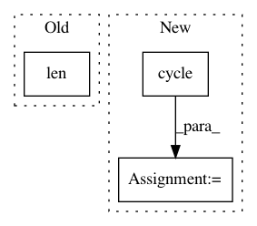

d490edce8fc483707c58e852286950ace7e8cb59,batchflow/utils.py,,show_research,#Any#Any#Any#Any#Any#Any#Any#,132
Before Change
if color is None:
color = list(mcolors.TABLEAU_COLORS.keys())
df_len = len(df["config"].unique())
replace = not len(color) > df_len
chosen_colors = np.random.choice(color, replace=replace, size=df_len)
kwargs = {"figsize": (9 * len(layouts), 7), "nrows": 1, "ncols": len(layouts), **kwargs}
After Change
cmap = plt.get_cmap(color)
chosen_colors = [cmap(i/df_len) for i in range(df_len)]
else:
chosen_colors = itertools.cycle(color)
kwargs = {"figsize": (9 * len(layouts), 7), "nrows": 1, "ncols": len(layouts), **kwargs}
_, ax = plt.subplots(**kwargs)
In pattern: SUPERPATTERN
Frequency: 3
Non-data size: 3
Instances
Project Name: analysiscenter/batchflow
Commit Name: d490edce8fc483707c58e852286950ace7e8cb59
Time: 2020-07-08
Author: 7520522+a-arefina@users.noreply.github.com
File Name: batchflow/utils.py
Class Name:
Method Name: show_research
Project Name: ScottfreeLLC/AlphaPy
Commit Name: a649429a334e01a964e75065c812bce4391c0f5d
Time: 2016-10-09
Author: Mark.R.Conway@gmail.com
File Name: plots.py
Class Name:
Method Name: plot_roc_curve
Project Name: OpenNMT/OpenNMT-py
Commit Name: 23dffb96ac95827a3af89f6ff027d254284ba93c
Time: 2019-02-08
Author: guillaumekln@users.noreply.github.com
File Name: onmt/inputters/inputter.py
Class Name: DatasetLazyIter
Method Name: __iter__